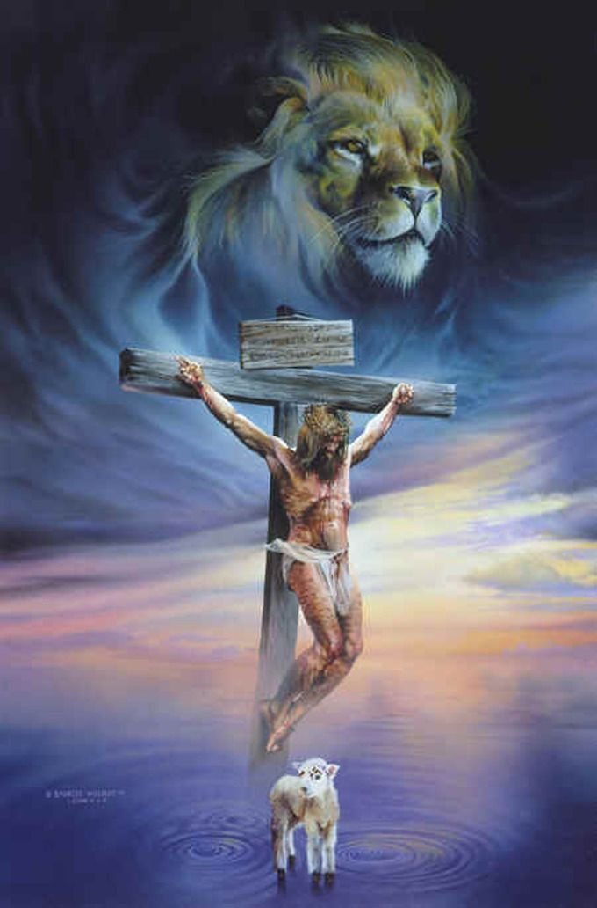

Jesus Christ, the Son of God
"The Lion and the Lamb"

Jesus Christ representing the Lion and the Lamb (Revelation 5: 5-6).
When Jesus is referred to as the Lion and the Lamb, we are to see Him as not only the conquering King who will slay the enemies of God at His return, but also as the sacrificial Lamb who took away the reproach of sin from His people so they may share in His ultimate victory.
"For God so loved the world, that He gave His only begotten Son, that whosoever believeth in Him should not perish, but have everlasting life." John 3:16
Read more and get more biblical answers at www.gotquestions.org.